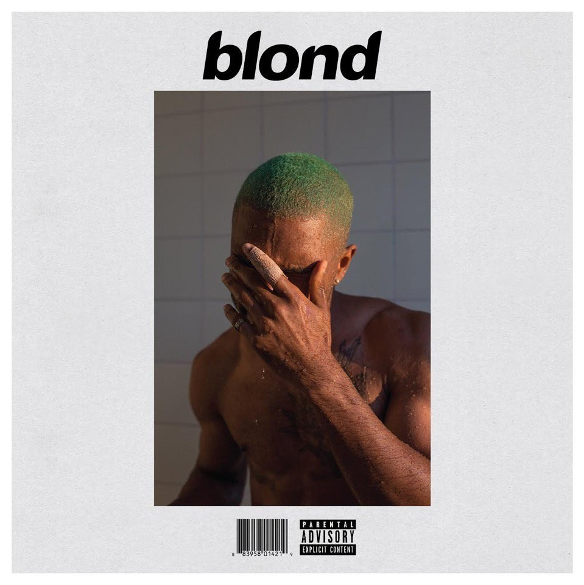

Blond is the second studio album by American singer Frank Ocean
Evermore is the ninth studio album by American singer-songwriter Taylor Swift

Starboy is the third studio album by Canadian singer the Weeknd
When We All Fall Asleep is the debut studio album by American singer and songwriter Billie Eilish